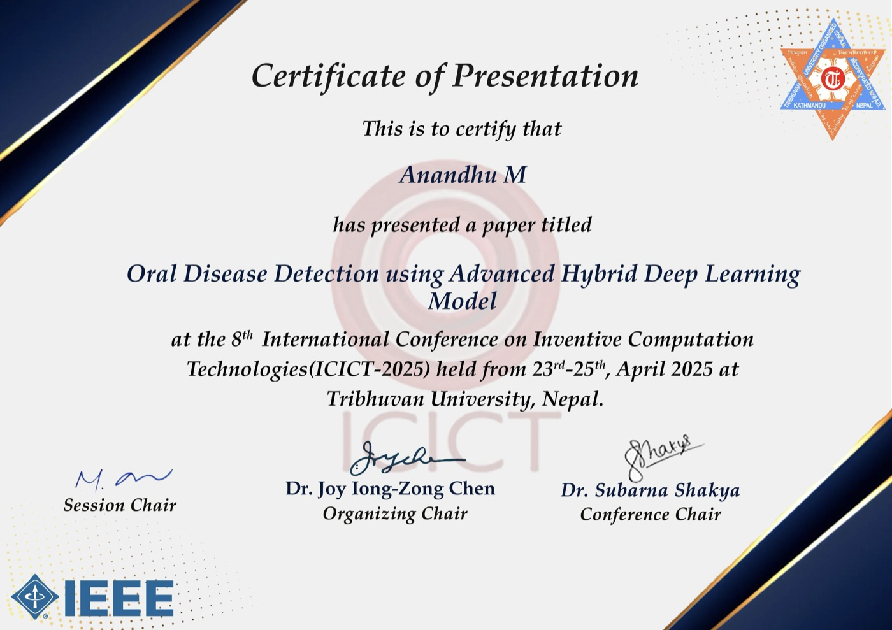

<title>Anandhu M</title>
<meta name="claude:viewport-fit-sides" content="cover">
<meta name="description" content="Anandhu M — AI/ML Engineer working on document intelligence, vision-language OCR, RAG and LLM systems for regulated life-sciences content.">
<link rel="preconnect" href="https://fonts.googleapis.com">
<link rel="preconnect" href="https://fonts.gstatic.com" crossorigin>
<link rel="stylesheet" href="https://fonts.googleapis.com/css2?family=Bricolage+Grotesque:opsz,wght@12..96,400;12..96,600;12..96,800&family=Public+Sans:ital,wght@0,400;0,500;0,600;1,400&family=IBM+Plex+Mono:wght@400;500&display=swap">
<style>
/* Layout: a parsed document. Hero = a protocol page with layout-detection boxes beside its JSON output;
   the rest reads like the extracted record: labelled sections on a left rail, content on the right. */
:root{
  --paper:#F3F5F8;      /* cool page ground */
  --sheet:#FFFFFF;      /* document surface */
  --ink:#141B2D;        /* primary text, deep navy */
  --muted:#5A6478;      /* secondary text, blue-biased grey */
  --rule:#D9DEE7;       /* hairlines */
  --accent:#2447C9;     /* cobalt: links, emphasis */
  --accent-soft:#E3E9FB;
  /* layout-class colours (semantic: what the model detected) */
  --c-head:#2447C9; --c-table:#0E8A6B; --c-fig:#B5462F; --c-text:#8A6A12;
  --bar:#E4E8EF;
  --font-display:"Bricolage Grotesque", "Avenir Next", "Segoe UI", sans-serif;
  --font-body:"Public Sans", "Helvetica Neue", Arial, sans-serif;
  --font-mono:"IBM Plex Mono", ui-monospace, "SF Mono", Menlo, monospace;
  --s-xs:.8125rem; --s-sm:.9375rem; --s-md:1.0625rem; --s-lg:1.375rem; --s-xl:2rem; --s-hero:clamp(2.75rem, 7vw, 5.25rem);
}
@media (prefers-color-scheme: dark){
  :root:not([data-theme="light"]){
    color-scheme:dark;
    --paper:#0D1220; --sheet:#151C2E; --ink:#E7EBF3; --muted:#9AA4B8; --rule:#273049;
    --accent:#8CA6FF; --accent-soft:#1D2848;
    --c-head:#8CA6FF; --c-table:#4FD1A5; --c-fig:#F08A6E; --c-text:#E2BE5A; --bar:#232C43;
  }
}
:root[data-theme="dark"]{
  color-scheme:dark;
  --paper:#0D1220; --sheet:#151C2E; --ink:#E7EBF3; --muted:#9AA4B8; --rule:#273049;
  --accent:#8CA6FF; --accent-soft:#1D2848;
  --c-head:#8CA6FF; --c-table:#4FD1A5; --c-fig:#F08A6E; --c-text:#E2BE5A; --bar:#232C43;
}

*{box-sizing:border-box}
html{scroll-behavior:smooth}
@media (prefers-reduced-motion: reduce){html{scroll-behavior:auto}}
body{
  background:var(--paper); color:var(--ink);
  font-family:var(--font-body); font-size:var(--s-md); line-height:1.6;
  padding-left:max(16px, env(safe-area-inset-left, 0px));
  padding-right:max(16px, env(safe-area-inset-right, 0px));
  -webkit-font-smoothing:antialiased;
}
body::before{content:"";position:fixed;inset:0 0 auto;height:env(safe-area-inset-top,0px);z-index:10;background:var(--paper)}
a{color:var(--accent);text-decoration-thickness:1px;text-underline-offset:3px}
a:focus-visible,button:focus-visible{outline:2px solid var(--accent);outline-offset:3px;border-radius:2px}
h1,h2,h3{font-family:var(--font-display);text-wrap:balance;margin:0;line-height:1.1}
p{margin:0}
.wrap{max-width:1160px;margin:0 auto}

/* nav */
.nav{position:sticky;top:env(safe-area-inset-top,0px);z-index:5;background:color-mix(in srgb, var(--paper) 88%, transparent);backdrop-filter:blur(8px);border-bottom:1px solid var(--rule)}
.nav .wrap{display:flex;align-items:center;justify-content:space-between;gap:16px;padding-block:14px;flex-wrap:wrap}
.mark{font-family:var(--font-display);font-weight:800;font-size:1.125rem;letter-spacing:-.01em;color:var(--ink);text-decoration:none}
.mark span{color:var(--accent)}
.nav ul{display:flex;gap:22px;list-style:none;margin:0;padding:0;flex-wrap:wrap}
.nav ul a{color:var(--muted);text-decoration:none;font-size:var(--s-sm);font-weight:500}
.nav ul a:hover{color:var(--ink)}

/* hero */
.hero{display:grid;grid-template-columns:minmax(0,1.05fr) minmax(0,1fr);gap:56px;align-items:center;padding-block:72px 64px}
.eyebrow{font-family:var(--font-mono);font-size:var(--s-xs);letter-spacing:.08em;text-transform:uppercase;color:var(--muted);display:flex;align-items:center;gap:10px}
.eyebrow .dot{width:8px;height:8px;border-radius:50%;background:var(--c-table);box-shadow:0 0 0 4px color-mix(in srgb,var(--c-table) 20%,transparent)}
.hero h1{font-size:var(--s-hero);font-weight:800;letter-spacing:-.035em;margin-top:18px}
.hero .role{font-family:var(--font-display);font-weight:600;font-size:var(--s-lg);margin-top:14px;color:var(--ink)}
.hero .lede{color:var(--muted);margin-top:20px;max-width:56ch}
.hero .lede strong{color:var(--ink);font-weight:600}
.cta{display:flex;gap:12px;flex-wrap:wrap;margin-top:30px}
.btn{display:inline-flex;align-items:center;gap:8px;padding:11px 18px;border-radius:6px;font-weight:600;font-size:var(--s-sm);text-decoration:none;border:1px solid var(--rule);color:var(--ink);background:var(--sheet);transition:border-color .15s, transform .15s}
.btn:hover{border-color:var(--accent);transform:translateY(-1px)}
.btn.primary{background:var(--ink);color:var(--paper);border-color:var(--ink)}
.stats{display:grid;grid-template-columns:repeat(4,minmax(0,1fr));gap:0;margin-top:40px;border-top:1px solid var(--rule)}
.stat{padding:16px 16px 0 0}
.stat + .stat{padding-left:16px;border-left:1px solid var(--rule)}
.stat b{display:block;font-family:var(--font-display);font-size:var(--s-xl);font-weight:800;letter-spacing:-.02em;font-variant-numeric:tabular-nums}
.stat span{font-size:var(--s-xs);color:var(--muted);line-height:1.35;display:block;margin-top:4px}

/* parsed-document figure */
.parse{position:relative;display:grid;grid-template-columns:minmax(0,1fr);gap:0}
.sheet{position:relative;background:var(--sheet);border:1px solid var(--rule);border-radius:4px;padding:26px 26px 30px;box-shadow:0 1px 0 var(--rule),0 24px 48px -28px rgba(20,27,45,.35);overflow:hidden}
.sheet-meta{display:flex;justify-content:space-between;font-family:var(--font-mono);font-size:.6875rem;color:var(--muted);margin-bottom:16px}
.blk{position:relative;outline:1.5px solid var(--c);outline-offset:5px;border-radius:1px;margin-bottom:22px;--c:var(--c-text)}
.blk::before{content:attr(data-label);position:absolute;top:-17px;left:-6px;font-family:var(--font-mono);font-size:.625rem;line-height:1;padding:2px 5px;background:var(--c);color:var(--sheet);border-radius:2px 2px 0 0;letter-spacing:.02em}
.blk.h{--c:var(--c-head)} .blk.t{--c:var(--c-table)} .blk.f{--c:var(--c-fig)}
.blk.h .ht{font-family:var(--font-body);font-weight:600;font-size:.875rem}
.line{height:7px;background:var(--bar);border-radius:2px;margin:6px 0}
.tbl{display:grid;grid-template-columns:1.4fr 1fr 1fr 1fr;gap:1px;background:var(--rule);border:1px solid var(--rule);font-family:var(--font-mono);font-size:.625rem}
.tbl span{background:var(--sheet);padding:4px 6px;color:var(--muted);white-space:nowrap;overflow:hidden;text-overflow:ellipsis}
.tbl span.th{color:var(--ink);font-weight:500}
.figrow{display:flex;gap:14px;align-items:flex-end}
.chart{flex:1;display:flex;align-items:flex-end;gap:5px;height:54px;border-left:1px solid var(--rule);border-bottom:1px solid var(--rule);padding:0 4px}
.chart i{flex:1;background:color-mix(in srgb,var(--c-fig) 55%,var(--bar));border-radius:1px 1px 0 0}
.cap{flex:1.2}
.scan{position:absolute;left:0;right:0;height:42px;top:-42px;background:linear-gradient(to bottom,transparent,color-mix(in srgb,var(--accent) 14%,transparent),transparent);pointer-events:none;animation:scan 5.5s cubic-bezier(.45,.05,.55,.95) infinite 1s}
@keyframes scan{0%{top:-42px}70%,100%{top:100%}}
@media (prefers-reduced-motion: reduce){.scan{display:none}}
.json{margin:-34px 0 0 auto;width:min(84%,400px);position:relative;z-index:2;background:var(--ink);color:#C9D3E6;border-radius:6px;padding:16px 18px;font-family:var(--font-mono);font-size:.75rem;line-height:1.65;overflow-x:auto;box-shadow:0 20px 40px -20px rgba(10,14,25,.6)}
:root[data-theme="dark"] .json{background:#060A14;border:1px solid var(--rule)}
@media (prefers-color-scheme: dark){:root:not([data-theme="light"]) .json{background:#060A14;border:1px solid var(--rule)}}
.json pre{margin:0;white-space:pre}
.json .k{color:#8FB0FF}.json .s{color:#7FE0BE}.json .n{color:#F2C46B}.json .c{color:#6C7891}

/* sections */
section.block{display:grid;grid-template-columns:200px minmax(0,1fr);gap:48px;padding-block:72px;border-top:1px solid var(--rule)}
.rail{position:relative}
.rail .tag{font-family:var(--font-mono);font-size:var(--s-xs);color:var(--accent);letter-spacing:.04em}
.rail h2{font-size:var(--s-xl);font-weight:800;letter-spacing:-.025em;margin-top:8px}
.rail p{color:var(--muted);font-size:var(--s-sm);margin-top:12px}
@media (min-width:861px){.rail-in{position:sticky;top:96px}}

/* featured project */
.feature{background:var(--sheet);border:1px solid var(--rule);border-radius:8px;padding:32px}
.kicker{font-family:var(--font-mono);font-size:var(--s-xs);text-transform:uppercase;letter-spacing:.08em;color:var(--muted)}
.feature h3{font-size:clamp(1.5rem,3vw,2rem);font-weight:800;letter-spacing:-.02em;margin-top:10px}
.feature > p{color:var(--muted);margin-top:12px;max-width:62ch}
.pipeline{display:flex;align-items:stretch;gap:0;margin-top:28px;overflow-x:auto;padding-bottom:4px}
.step{flex:1 0 140px;border:1px solid var(--rule);border-radius:6px;padding:12px 14px;background:var(--paper)}
.step small{display:block;font-family:var(--font-mono);font-size:.6875rem;color:var(--muted);letter-spacing:.04em}
.step b{display:block;font-size:var(--s-sm);font-weight:600;margin-top:4px;line-height:1.3}
.step.hl{border-color:var(--accent);background:var(--accent-soft)}
.arrow{flex:0 0 26px;display:grid;place-items:center;color:var(--muted);font-family:var(--font-mono)}
.feature-grid{display:grid;grid-template-columns:minmax(0,1fr) 200px;gap:32px;margin-top:28px;align-items:start}
.big{border-left:2px solid var(--accent);padding-left:18px}
.big b{font-family:var(--font-display);font-size:3.25rem;font-weight:800;letter-spacing:-.04em;line-height:1;color:var(--accent);display:block}
.big span{font-size:var(--s-sm);color:var(--muted);display:block;margin-top:8px;line-height:1.4}
ul.pts{margin:0;padding:0;list-style:none;display:grid;gap:10px}
ul.pts li{position:relative;padding-left:20px;max-width:66ch}
ul.pts li::before{content:"";position:absolute;left:2px;top:.68em;width:8px;height:1.5px;background:var(--accent)}
.chips{display:flex;flex-wrap:wrap;gap:6px;margin-top:20px}
.chip{font-family:var(--font-mono);font-size:.75rem;padding:3px 9px;border:1px solid var(--rule);border-radius:999px;color:var(--muted);background:var(--sheet)}

/* project list */
.projects{display:grid;gap:0;margin-top:40px}
.proj{display:grid;grid-template-columns:minmax(0,.9fr) minmax(0,1.3fr);gap:32px;padding-block:28px;border-top:1px solid var(--rule)}
.proj h3{font-size:var(--s-lg);font-weight:600;letter-spacing:-.01em}
.proj .sum{color:var(--muted);font-size:var(--s-sm);margin-top:8px}
.proj .chips{margin-top:14px}
.proj ul.pts{font-size:var(--s-sm)}

.proj.first{border-top:0;padding-top:0}
.metric{display:flex;align-items:baseline;gap:8px;margin-top:12px}
.metric b{font-family:var(--font-display);font-size:var(--s-xl);font-weight:800;letter-spacing:-.03em;color:var(--accent);font-variant-numeric:tabular-nums;line-height:1}
.metric span{font-family:var(--font-mono);font-size:var(--s-xs);color:var(--muted)}

/* research */
.paper{background:var(--sheet);border:1px solid var(--rule);border-radius:8px;padding:32px}
.paper-meta{display:flex;flex-wrap:wrap;gap:6px 14px;align-items:center;font-size:var(--s-xs);color:var(--muted)}
.paper-meta .venue{font-family:var(--font-mono);font-weight:500;letter-spacing:.06em;text-transform:uppercase;color:var(--sheet);background:var(--accent);padding:3px 8px;border-radius:3px}
.paper h3{font-size:clamp(1.5rem,3vw,2rem);font-weight:800;letter-spacing:-.02em;margin-top:16px}
.doi{font-family:var(--font-mono);font-size:var(--s-sm);color:var(--muted);margin-top:10px;word-break:break-all}
.abstract{color:var(--muted);margin-top:18px;max-width:66ch}
.abstract strong{color:var(--ink);font-weight:600}
.arch{display:flex;align-items:stretch;margin-top:24px;overflow-x:auto;padding-bottom:4px}
.paper-actions{display:flex;gap:12px;flex-wrap:wrap;margin-top:28px}
.cert{margin:24px 0 0;display:grid;gap:10px}
.cert img{display:block;width:100%;max-width:100%;height:auto;border:1px solid var(--rule);border-radius:6px;box-shadow:0 20px 40px -28px rgba(20,27,45,.4)}
.cert figcaption{font-family:var(--font-mono);font-size:var(--s-xs);color:var(--muted)}

/* experience */
.job-head{display:flex;justify-content:space-between;align-items:baseline;gap:16px;flex-wrap:wrap}
.job-head h3{font-size:var(--s-lg);font-weight:600}
.job-head .when{font-family:var(--font-mono);font-size:var(--s-xs);color:var(--muted);font-variant-numeric:tabular-nums}
.job .where{color:var(--muted);font-size:var(--s-sm);margin:4px 0 20px}

/* skills */
.skills{display:grid;grid-template-columns:repeat(auto-fit,minmax(min(100%,300px),1fr));gap:0;border-top:1px solid var(--rule)}
.sk{padding:18px 20px 18px 0;border-bottom:1px solid var(--rule)}
.sk h3{font-family:var(--font-mono);font-weight:500;font-size:var(--s-xs);text-transform:uppercase;letter-spacing:.07em;color:var(--muted)}
.sk p{margin-top:8px;font-size:var(--s-sm)}

/* academic + education */
.two{display:grid;grid-template-columns:repeat(auto-fit,minmax(min(100%,320px),1fr));gap:40px}
.acad{display:grid;gap:0}
.acad div{display:grid;grid-template-columns:minmax(0,1fr) auto;gap:16px;padding-block:14px;border-bottom:1px solid var(--rule);align-items:baseline}
.acad div:first-child{border-top:1px solid var(--rule)}
.acad b{font-weight:600;font-size:var(--s-sm);display:block}
.acad small{color:var(--muted);font-size:var(--s-xs);display:block;margin-top:2px}
.acad .num{font-family:var(--font-mono);font-size:var(--s-sm);color:var(--accent);font-variant-numeric:tabular-nums;white-space:nowrap}
.sub{font-family:var(--font-display);font-weight:600;font-size:var(--s-md);margin-bottom:12px}
ul.certs{margin:0;padding:0;list-style:none;font-size:var(--s-sm);display:grid;gap:8px;color:var(--muted)}
ul.certs b{color:var(--ink);font-weight:500}

/* contact */
.contact{padding-block:88px 56px;border-top:1px solid var(--rule)}
.contact h2{font-size:clamp(2rem,5vw,3.5rem);font-weight:800;letter-spacing:-.035em;max-width:16ch}
.contact p{color:var(--muted);margin-top:16px;max-width:56ch}
.clist{display:grid;grid-template-columns:repeat(auto-fit,minmax(min(100%,240px),1fr));gap:0;margin-top:36px;border-top:1px solid var(--rule)}
.clist div{padding:16px 16px 16px 0;border-bottom:1px solid var(--rule)}
.clist small{display:block;font-family:var(--font-mono);font-size:.6875rem;text-transform:uppercase;letter-spacing:.08em;color:var(--muted)}
.clist a,.clist span{display:block;margin-top:4px;font-weight:500;color:var(--ink);text-decoration:none;word-break:break-word}
.clist a:hover{color:var(--accent)}
footer{display:flex;justify-content:space-between;gap:16px;flex-wrap:wrap;font-size:var(--s-xs);color:var(--muted);padding-block:28px 40px;font-family:var(--font-mono)}

@media (max-width:960px){
  .hero{grid-template-columns:minmax(0,1fr);gap:48px;padding-block:48px}
  .parse{max-width:560px}
}
@media (max-width:860px){
  section.block{grid-template-columns:minmax(0,1fr);gap:24px;padding-block:56px}
  .proj{grid-template-columns:minmax(0,1fr);gap:14px}
  .feature-grid{grid-template-columns:minmax(0,1fr)}
  .nav ul{display:none}
}
@media (max-width:520px){
  .stats{grid-template-columns:repeat(2,minmax(0,1fr))}
  .stat:nth-child(3){padding-left:0;border-left:0}
  .stat:nth-child(n+3){border-top:1px solid var(--rule);margin-top:16px}
  .feature,.paper{padding:22px}
  .json{width:94%}
  .tbl span:nth-child(4n){display:none}
  .tbl{grid-template-columns:1.4fr 1fr 1fr}
}
</style>

<nav class="nav" aria-label="Primary">
  <div class="wrap">
    <a class="mark" href="#top">Anandhu M<span>.</span></a>
    <ul>
      <li><a href="#work">Work</a></li>
      <li><a href="#research">Research</a></li>
      <li><a href="#ml">ML projects</a></li>
      <li><a href="#experience">Experience</a></li>
      <li><a href="#skills">Skills</a></li>
      <li><a href="#education">Education</a></li>
      <li><a href="#contact">Contact</a></li>
    </ul>
  </div>
</nav>

<main class="wrap" id="top">
  <header class="hero">
    <div>
      <p class="eyebrow"><span class="dot" aria-hidden="true"></span>AI/ML Engineer · Feathersoft Info Solutions</p>
      <h1>Anandhu M</h1>
      <p class="role">I turn long clinical documents into data a model can trust.</p>
      <p class="lede">I build <strong>vision-language OCR pipelines</strong> that turn 200-page study protocols into structured JSON, and <strong>LLM and RAG systems</strong> that draft FDA/EMA-style reports with validated, reviewable output. My research on oral disease detection is <strong>published by IEEE</strong> (ICICT 2025). I'm based in Kerala, and my M.Tech is in AI &amp; ML from Amrita Vishwa Vidyapeetham.</p>
      <div class="cta">
        <a class="btn primary" href="#work">See selected work</a>
        <a class="btn" href="mailto:anandhumuralee.265@gmail.com">Email me</a>
        <a class="btn" href="https://linkedin.com/in/anandhu-m-87abb91ab" target="_blank" rel="noopener">LinkedIn ↗</a>
      </div>
      <div class="stats">
        <div class="stat"><b>33%</b><span>fewer false section headings</span></div>
        <div class="stat"><b>200+</b><span>page protocols parsed to JSON</span></div>
        <div class="stat"><b>170+</b><span>structured prompts in production</span></div>
        <div class="stat"><b>25+</b><span>report sections covered</span></div>
      </div>
    </div>

    <figure class="parse" aria-label="Illustration: a clinical protocol page with detected layout regions, and the JSON the pipeline produces from it" style="margin:0">
      <div class="sheet">
        <div class="scan" aria-hidden="true"></div>
        <div class="sheet-meta"><span>CLINICAL STUDY PROTOCOL · v3.1</span><span>p. 37 / 212</span></div>
        <div class="blk h" data-label="section_header 0.98"><div class="ht">5.2&nbsp;&nbsp;Study Design and Dosing Schedule</div></div>
        <div class="blk" data-label="text 0.96">
          <div class="line" style="width:100%"></div><div class="line" style="width:94%"></div><div class="line" style="width:97%"></div><div class="line" style="width:61%"></div>
        </div>
        <div class="blk t" data-label="table 0.94 · continues p.38">
          <div class="tbl">
            <span class="th">Cohort</span><span class="th">Dose</span><span class="th">Route</span><span class="th">n</span>
            <span>A · low</span><span>10 mg/kg</span><span>IV</span><span>12</span>
            <span>B · mid</span><span>30 mg/kg</span><span>IV</span><span>12</span>
            <span>C · high</span><span>100 mg/kg</span><span>IV</span><span>12</span>
          </div>
        </div>
        <div class="blk f" data-label="figure 0.91" style="margin-bottom:0">
          <div class="figrow">
            <div class="chart" aria-hidden="true"><i style="height:30%"></i><i style="height:52%"></i><i style="height:78%"></i><i style="height:64%"></i><i style="height:41%"></i><i style="height:25%"></i></div>
            <div class="cap"><div class="line" style="width:100%"></div><div class="line" style="width:72%"></div></div>
          </div>
        </div>
      </div>
      <div class="json" aria-hidden="true"><pre><span class="c">// structured output</span>
{
  <span class="k">"section"</span>: <span class="s">"5.2"</span>,
  <span class="k">"title"</span>: <span class="s">"Study Design and Dosing…"</span>,
  <span class="k">"level"</span>: <span class="n">2</span>,
  <span class="k">"toc_verified"</span>: <span class="n">true</span>,
  <span class="k">"blocks"</span>: [
    { <span class="k">"type"</span>: <span class="s">"table"</span>, <span class="k">"rows"</span>: <span class="n">3</span>,
      <span class="k">"pages"</span>: [<span class="n">37</span>, <span class="n">38</span>] },
    { <span class="k">"type"</span>: <span class="s">"figure"</span>, <span class="k">"page"</span>: <span class="n">37</span> }
  ]
}</pre></div>
    </figure>
  </header>

  <section class="block" id="work">
    <div class="rail"><div class="rail-in">
      <p class="tag">§ selected_work</p>
      <h2>Selected work</h2>
      <p>Production systems for life-sciences and enterprise clients, built at Feathersoft.</p>
    </div></div>
    <div>
      <article class="feature">
        <p class="kicker">Featured · Document AI</p>
        <h3>Vision-language OCR pipeline for clinical documents</h3>
        <p>A PDF extraction system that converts 200+ page clinical study protocols into structured JSON. It keeps the section hierarchy, tables and figures intact across page breaks.</p>
        <div class="pipeline" role="list" aria-label="Pipeline stages">
          <div class="step" role="listitem"><small>input</small><b>Clinical PDF, 200+ pages</b></div>
          <div class="arrow" aria-hidden="true">→</div>
          <div class="step" role="listitem"><small>layout + OCR</small><b>dots.mocr VLM (3B, Qwen2)</b></div>
          <div class="arrow" aria-hidden="true">→</div>
          <div class="step hl" role="listitem"><small>correction</small><b>LLM checks headings against the TOC</b></div>
          <div class="arrow" aria-hidden="true">→</div>
          <div class="step" role="listitem"><small>output</small><b>Structured JSON</b></div>
          <div class="arrow" aria-hidden="true">→</div>
          <div class="step" role="listitem"><small>review</small><b>FastAPI + React UI</b></div>
        </div>
        <div class="feature-grid">
          <ul class="pts">
            <li>Built the extraction pipeline on dots.mocr, a 3B-parameter vision-language model with a Qwen2 decoder and a 42-layer vision transformer.</li>
            <li>Designed an LLM correction layer that checks each heading against the document's own table of contents to fix systematic misclassification.</li>
            <li>Rule-based heuristics had measurably failed on this problem. The TOC-grounded approach cut false headings by a third.</li>
            <li>Exposed the pipeline through FastAPI services with a React front end for reviewers.</li>
          </ul>
          <div class="big"><b>−33%</b><span>false section-heading detections vs. the rule-based baseline</span></div>
        </div>
        <div class="chips"><span class="chip">Python</span><span class="chip">PyTorch</span><span class="chip">Vision-Language Models</span><span class="chip">FastAPI</span><span class="chip">React</span><span class="chip">LLM APIs</span></div>
      </article>

      <div class="projects">
        <article class="proj">
          <div>
            <p class="kicker">Generative AI · RAG</p>
            <h3>GLP report &amp; clinical protocol generator</h3>
            <p class="sum">An LLM authoring tool that drafts FDA/EMA-style GLP study reports and clinical protocols using retrieval-augmented generation.</p>
            <div class="chips"><span class="chip">LangChain</span><span class="chip">Gemini</span><span class="chip">Weaviate</span><span class="chip">Pydantic</span></div>
          </div>
          <ul class="pts">
            <li>Wrote and maintain 170+ structured YAML prompts across 25+ document sections.</li>
            <li>Designed multi-step chat workflows that collect details, confirm them, generate the section and handle rewrites.</li>
            <li>Enforced Pydantic-validated outputs and rule-based checks to reduce hallucination and keep sections consistent.</li>
            <li>Refined prompts and section-specific retrieval queries from reviewer feedback to improve accuracy and compliance.</li>
          </ul>
        </article>
        <article class="proj">
          <div>
            <p class="kicker">Multimodal RAG</p>
            <h3>Multimodal document retrieval</h3>
            <p class="sum">A retrieval platform that returns the tables, charts, figures and diagrams behind each AI answer, with document citations.</p>
            <div class="chips"><span class="chip">Docling</span><span class="chip">PaddleOCR</span><span class="chip">PyMuPDF</span><span class="chip">Weaviate</span></div>
          </div>
          <ul class="pts">
            <li>Built document parsing for figures, tables and charts with Docling, PaddleOCR and PyMuPDF.</li>
            <li>Captured page-level and layout metadata for visual grounding and source citations.</li>
            <li>Prepared extracted multimodal content for indexing in the vector store.</li>
          </ul>
        </article>
        <article class="proj">
          <div>
            <p class="kicker">Knowledge graphs</p>
            <h3>Enterprise knowledge graph platform</h3>
            <p class="sum">A configurable platform that turns unstructured documents into production knowledge graphs through ontology-driven modelling and LLM extraction.</p>
            <div class="chips"><span class="chip">Neo4j</span><span class="chip">Memgraph</span><span class="chip">Cypher</span><span class="chip">LLMs</span></div>
          </div>
          <ul class="pts">
            <li>Designed graph data models (nodes, relationships, properties) for document-derived graphs.</li>
            <li>Built document-to-graph pipelines that feed parsed content into LLM entity and relationship extraction.</li>
            <li>Loaded and queried graphs in Neo4j and Memgraph, and benchmarked query performance for downstream use.</li>
          </ul>
        </article>
        <article class="proj">
          <div>
            <p class="kicker">LLM serving · Agents</p>
            <h3>Enterprise AI platform: model serving</h3>
            <p class="sum">A shared enterprise platform offering Model-as-a-Service, agent orchestration and governance.</p>
            <div class="chips"><span class="chip">vLLM</span><span class="chip">MCP</span><span class="chip">Deep Agents</span><span class="chip">FastAPI</span></div>
          </div>
          <ul class="pts">
            <li>Deployed open-source LLMs and vision-language models with vLLM for the MaaS layer.</li>
            <li>Tuned batch size, context length and GPU memory settings to improve throughput and latency.</li>
            <li>Built Deep Agents and MCP tool workflows on top of the hosted models.</li>
          </ul>
        </article>
        <article class="proj">
          <div>
            <p class="kicker">Speech AI</p>
            <h3>AI voice documentation platform</h3>
            <p class="sum">A low-latency speech-to-template platform that turns spoken conversations into structured documentation.</p>
            <div class="chips"><span class="chip">PyTorch</span><span class="chip">Speech-to-Text</span><span class="chip">Diarization</span><span class="chip">CUDA</span></div>
          </div>
          <ul class="pts">
            <li>Built and evaluated the speech-to-text and speaker diarization pipeline on real recordings.</li>
            <li>Optimised GPU inference to cut end-to-end transcription latency.</li>
            <li>Measured transcription and diarization accuracy to guide model selection.</li>
          </ul>
        </article>
      </div>
    </div>
  </section>

  <section class="block" id="research">
    <div class="rail"><div class="rail-in">
      <p class="tag">§ publications</p>
      <h2>Research</h2>
      <p>Peer-reviewed work from my M.Tech, presented at an IEEE conference.</p>
    </div></div>
    <div>
      <article class="paper">
        <div class="paper-meta">
          <span class="venue">IEEE · ICICT 2025</span>
          <span>8th International Conference on Inventive Computation Technologies</span>
          <span>Tribhuvan University, Nepal · 23–25 April 2025</span>
        </div>
        <h3>Oral Disease Detection using Advanced Hybrid Deep Learning Model</h3>
        <p class="doi">DOI <a href="https://doi.org/10.1109/ICICT64420.2025.11005143" target="_blank" rel="noopener">10.1109/ICICT64420.2025.11005143</a></p>
        <p class="abstract">Oral diseases, including oral cancer, are usually diagnosed late, when treatment works less well. This paper presents a hybrid model that pairs <strong>DenseNet-169</strong> for spatial feature extraction with an <strong>LSTM</strong> for contextual analysis, so it can pick up fine disease patterns on images of the tongue. It classifies six tongue conditions and outperforms state-of-the-art CNNs on accuracy, robustness and generalisation. The approach is non-invasive and scalable, aimed at early diagnosis in clinical oral health.</p>

        <div class="arch" role="list" aria-label="Model architecture">
          <div class="step" role="listitem"><small>input</small><b>Tongue image</b></div>
          <div class="arrow" aria-hidden="true">→</div>
          <div class="step hl" role="listitem"><small>spatial features</small><b>DenseNet-169</b></div>
          <div class="arrow" aria-hidden="true">→</div>
          <div class="step hl" role="listitem"><small>contextual analysis</small><b>LSTM</b></div>
          <div class="arrow" aria-hidden="true">→</div>
          <div class="step" role="listitem"><small>output</small><b>6-class prediction</b></div>
        </div>

        <p class="kicker" style="margin-top:24px">Conditions classified</p>
        <div class="chips" style="margin-top:10px"><span class="chip">Healthy tongue</span><span class="chip">Hairy tongue</span><span class="chip">Leukoplakia</span><span class="chip">Oral thrush</span><span class="chip">Oral lichen planus</span><span class="chip">Oral cancer</span></div>

        <div class="paper-actions">
          <a class="btn primary" href="https://doi.org/10.1109/ICICT64420.2025.11005143" target="_blank" rel="noopener">Read on IEEE Xplore ↗</a>
        </div>
      </article>

      <figure class="cert">
        
        <figcaption>Certificate of Presentation, ICICT-2025 (IEEE), Tribhuvan University, Nepal</figcaption>
      </figure>
    </div>
  </section>

  <section class="block" id="ml">
    <div class="rail"><div class="rail-in">
      <p class="tag">§ ml_projects</p>
      <h2>Machine learning projects</h2>
      <p>Deep learning and computer vision work from my M.Tech and B.Tech.</p>
    </div></div>
    <div class="projects" style="margin-top:0">
      <article class="proj first">
        <div>
          <p class="kicker">Computer vision · Autonomous driving</p>
          <h3>Dynamic occupancy grid prediction for autonomous vehicles</h3>
          <div class="metric"><b>97%</b><span>accuracy</span></div>
          <div class="chips"><span class="chip">U-Net</span><span class="chip">LiDAR</span><span class="chip">PyTorch</span><span class="chip">Ego-motion compensation</span></div>
        </div>
        <ul class="pts">
          <li>Developed a U-Net architecture that predicts dynamic occupancy grid maps from LiDAR sequences.</li>
          <li>Added ego-motion compensation so the model separates static and dynamic parts of the scene more reliably.</li>
          <li>Reached 97% accuracy, supporting safer autonomous navigation.</li>
        </ul>
      </article>
      <article class="proj">
        <div>
          <p class="kicker">Medical imaging</p>
          <h3>Deep learning model to predict pancreatic cancer</h3>
          <div class="metric"><b>94%</b><span>accuracy</span></div>
          <div class="chips"><span class="chip">VGG16</span><span class="chip">Transfer learning</span><span class="chip">TensorFlow / Keras</span><span class="chip">Augmentation</span></div>
        </div>
        <ul class="pts">
          <li>Built a VGG16-based model that detects pancreatic cancer from medical images.</li>
          <li>Used data preprocessing, augmentation and fine-tuning of custom layers to lift diagnostic performance.</li>
          <li>Reached 94% accuracy on the medical imaging workflow.</li>
        </ul>
      </article>
      <article class="proj">
        <div>
          <p class="kicker">Classical ML</p>
          <h3>Breast cancer prediction (Wisconsin dataset)</h3>
          <div class="metric"><b>96%</b><span>accuracy</span></div>
          <div class="chips"><span class="chip">Scikit-learn</span><span class="chip">Feature engineering</span><span class="chip">Hyperparameter tuning</span></div>
        </div>
        <ul class="pts">
          <li>Trained an ML classifier on the Wisconsin breast cancer dataset.</li>
          <li>Improved results through feature engineering and model tuning, reaching 96% accuracy.</li>
        </ul>
      </article>
    </div>
  </section>

  <section class="block" id="experience">
    <div class="rail"><div class="rail-in">
      <p class="tag">§ experience</p>
      <h2>Experience</h2>
    </div></div>
    <div class="job">
      <div class="job-head"><h3>AI/ML Engineer, Feathersoft Info Solutions</h3><span class="when">Sep 2025 – Present</span></div>
      <p class="where">Kochi, Kerala</p>
      <ul class="pts">
        <li>Develop document intelligence pipelines that convert complex clinical PDFs into structured, machine-readable data.</li>
        <li>Build LLM and RAG generation workflows for regulated life-sciences documents.</li>
        <li>Own a library of 170+ structured prompts across 25+ report sections and refine them continuously from reviewer feedback.</li>
        <li>Reduced false section-heading detections by 33% in the clinical document OCR pipeline.</li>
        <li>Work with knowledge graphs, graph data modelling, MCP and deep-agent workflows across team projects.</li>
        <li>Build and maintain Python data-processing and AI pipelines from prototype to delivery.</li>
      </ul>
    </div>
  </section>

  <section class="block" id="skills">
    <div class="rail"><div class="rail-in">
      <p class="tag">§ skills</p>
      <h2>Toolkit</h2>
    </div></div>
    <div class="skills">
      <div class="sk"><h3>Generative AI &amp; LLMs</h3><p>LLMs, RAG, Agentic AI, Deep Agents, MCP, Prompt Engineering, Structured Outputs (Pydantic)</p></div>
      <div class="sk"><h3>Frameworks &amp; Serving</h3><p>LangChain, Google Gemini, vLLM, LLM APIs, GPU inference optimisation (CUDA)</p></div>
      <div class="sk"><h3>Document AI &amp; OCR</h3><p>Vision-Language Models (dots.mocr / Qwen2), Docling, PaddleOCR, PyMuPDF</p></div>
      <div class="sk"><h3>Machine &amp; Deep Learning</h3><p>PyTorch, TensorFlow, Keras, Scikit-learn, CNN, Transformers, LSTM / RNN, Transfer Learning</p></div>
      <div class="sk"><h3>Computer Vision</h3><p>YOLO, OpenCV, U-Net, VGG16</p></div>
      <div class="sk"><h3>Speech AI</h3><p>Speech-to-Text, Speaker Diarization</p></div>
      <div class="sk"><h3>Databases &amp; Graph</h3><p>Weaviate, Neo4j, Memgraph, MySQL</p></div>
      <div class="sk"><h3>Programming &amp; Backend</h3><p>Python, SQL, FastAPI, Django, React (integration)</p></div>
      <div class="sk"><h3>Data &amp; Tools</h3><p>NumPy, Pandas, Matplotlib, Git</p></div>
    </div>
  </section>

  <section class="block" id="education">
    <div class="rail"><div class="rail-in">
      <p class="tag">§ education</p>
      <h2>Education</h2>
    </div></div>
    <div class="two">
      <div>
        <p class="sub">Degrees</p>
        <div class="acad">
          <div><span><b>M.Tech, Computer Science &amp; Engineering (AI &amp; ML)</b><small>Amrita School of Computing, Amrita Vishwa Vidyapeetham · 2025</small></span><span class="num">CGPA 8.45</span></div>
          <div><span><b>B.Tech, Computer Science &amp; Engineering</b><small>Sree Buddha College of Engineering, APJ Abdul Kalam Technological University · 2023</small></span><span class="num">CGPA 7.82</span></div>
        </div>
      </div>
      <div>
        <p class="sub">Certifications &amp; presentations</p>
        <ul class="certs">
          <li><b>Certificate of Presentation, ICICT-2025</b> · IEEE / Tribhuvan University, Nepal</li>
          <li><b>Paper presentation, “24/7 Complaint Cell”</b> · RTACT 23</li>
          <li><b>Python Data Structures &amp; Algorithms + LeetCode</b> · Udemy</li>
          <li><b>The Ultimate MySQL Bootcamp</b> · Udemy</li>
          <li><b>Database Management Essentials</b> · University of Colorado System (Coursera)</li>
          <li><b>Python (Basic)</b> · HackerRank</li>
        </ul>
      </div>
    </div>
  </section>

  <section class="contact" id="contact">
    <p class="eyebrow"><span class="dot" aria-hidden="true"></span>Open to conversations</p>
    <h2 style="margin-top:16px">Have documents that need to become data?</h2>
    <p>I'm interested in roles and projects in document AI, RAG and LLM systems, especially where the output has to stand up to review.</p>
    <div class="clist">
      <div><small>Email</small><a href="mailto:anandhumuralee.265@gmail.com">anandhumuralee.265@gmail.com</a></div>
      <div><small>LinkedIn</small><a href="https://linkedin.com/in/anandhu-m-87abb91ab" target="_blank" rel="noopener">in/anandhu-m-87abb91ab ↗</a></div>
      <div><small>Phone</small><span>+91 90615 80396</span></div>
      <div><small>Location</small><span>Kerala, India</span></div>
    </div>
  </section>

  <footer>
    <span>© 2026 Anandhu M</span>
    <a href="#top" style="color:inherit">Back to top ↑</a>
  </footer>
</main>
